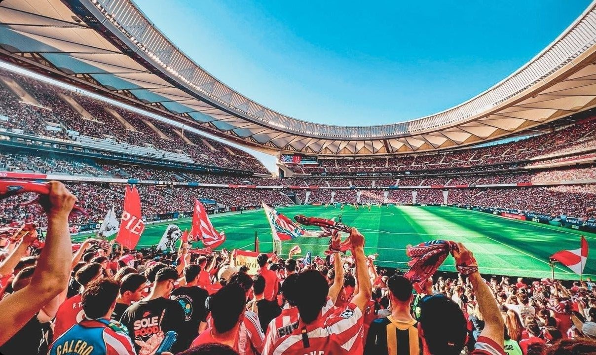

Dejanos saber que piensas!
Tu opinión es muy importante para nosotros. ¿Qué te pareció esta infografía? ¿Hay algún dato que te sorprendió o un momento que te gustaría que hubiéramos incluido? Estamos siempre buscando la manera de mejorar y seguir celebrando la magia del fútbol. Escríbenos tus comentarios, sugerencias o cualquier idea que tengas. ¡Nos encantaría saber de ti y construir juntos una comunidad de verdaderos aficionados!
Deja tu comentario!
Post categories
Noticias
10
Historia del futbol
2
Jugadores y leyendas
17
Eurocopa
48
Mundial de Fútbol
74
Champions League
213